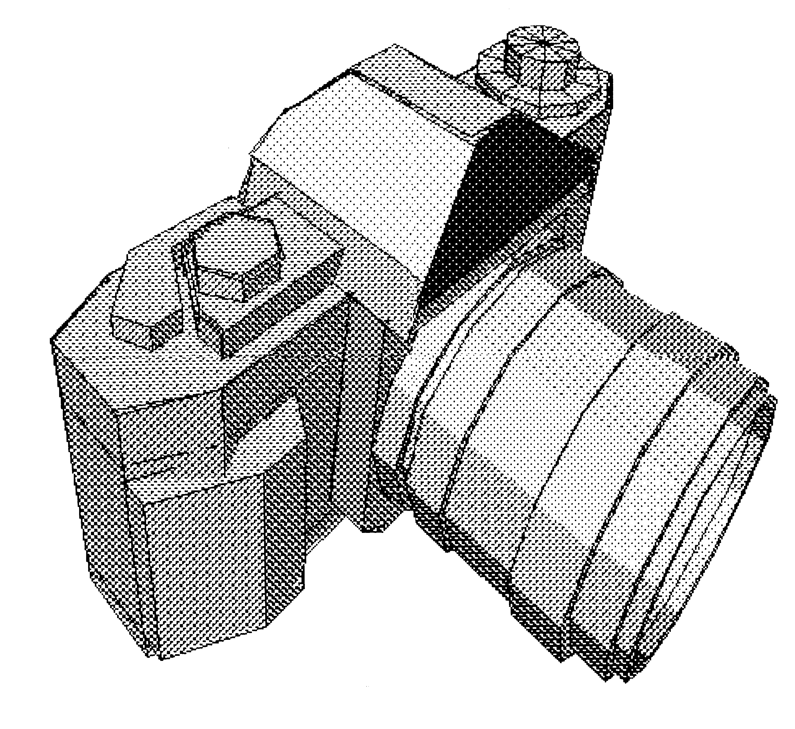
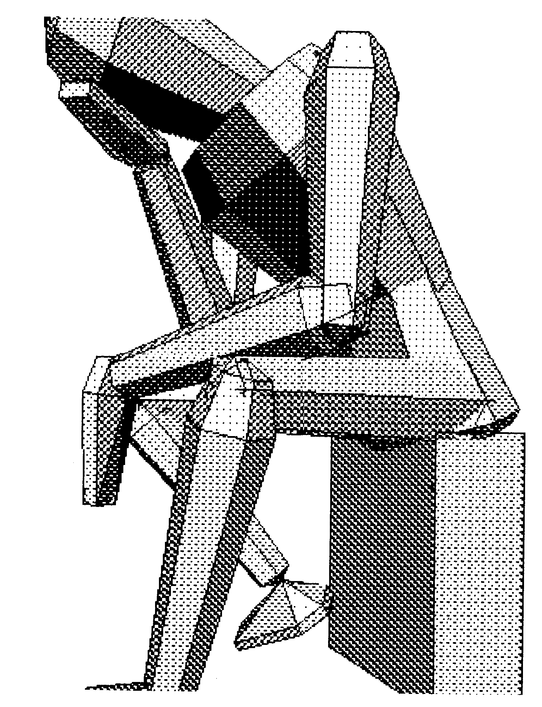
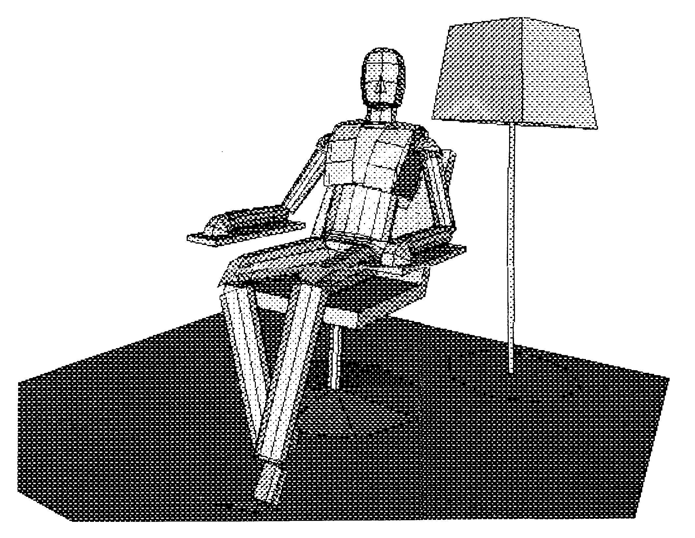
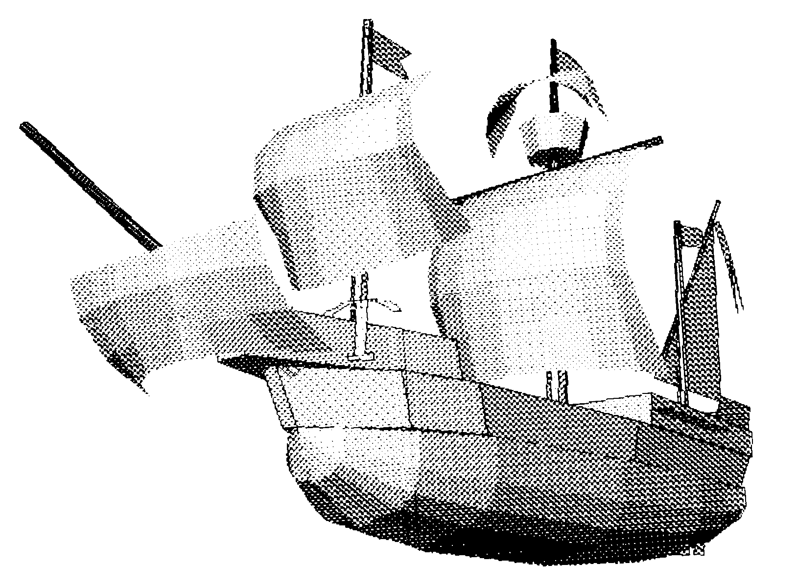
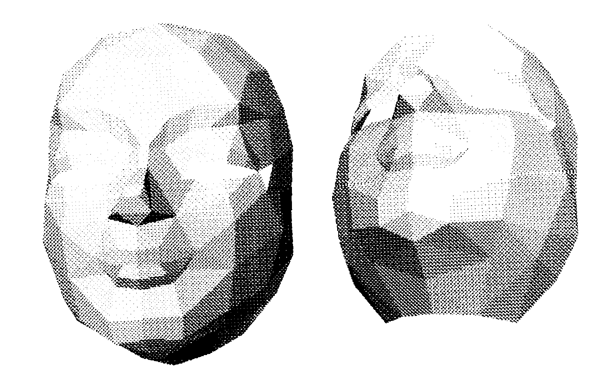
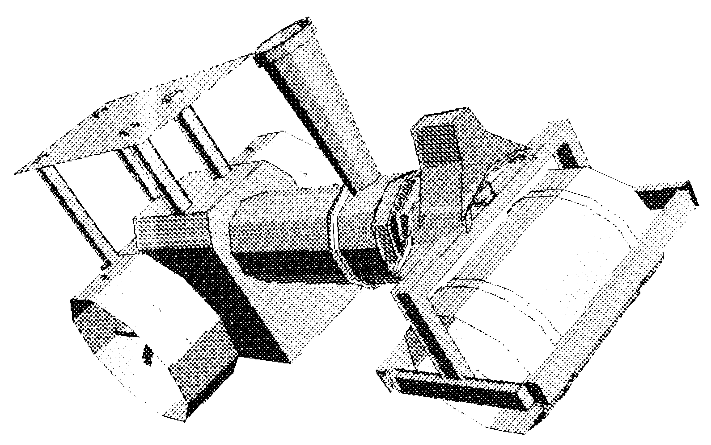

Auflösung: Giga-CAD-Wettbewerb
Es ist soweit: Wir stellen Ihnen die schönsten Grafiken und die Gewinner des Giga-CAD-Wettbewerbs aus Ausgabe 9/86 vor.
Um es gleich vorwegzunehmen: Der Wettbewerb war ein voller Erfolg. Wir waren erstaunt, wie viele komplexe und schöne Gebilde als Reaktion auf die Ausschreibung eintrafen. Es fiel uns sehr schwer, die ersten sechs Gewinner zu ermitteln. Aus diesem Grund beschlossen wir, die 40 besten Grafiken als Anhang im neuerschienenen Buch Giga-CAD Plus zu veröffentlichen. Die Einsender der 40 schönsten Grafiken erhalten unabhängig vom Wettbewerb als Preis dieses Buch. Die Namen der 40 Gewinner des Buches finden Sie am Ende dieser Wettbewerbsauflösung.
Doch nun zu den Gewinnern des Giga-CAD-Wettbewerbs.
Am schönsten fanden wir die sehr gute Nachbildung einer »Canon-Kamera«, die uns Christian Laker einschickte (Bild 1). Das Objekt belohnen wir mit der Prämie von 500 Mark.

Gleich dahinter konnte sich Oskar Brudel mit seinem »Denker« plazieren. Er erhält die ausgesetzten 250 Mark (Bild 2).

Ein Bild, das eine optisch sehr reizvolle Ausstrahlung besitzt, stammt von Carsten Felber (»Man Relax«, Bild 3). Sein Preis: 100 Mark.

Auf den vierten Platz kam Stefan Vilsmeier mit seinem »Segelschiff«, das besonders durch die vielen Kontraste an Wirkung gewinnt (Bild 4). Er erhält 50 Mark.

Die Nachbildung zweier »Masken« (Bild 5) von Lutz Twele konnte mit Rang 5 den Preis von 50 Mark verbuchen.

Für die wirklich gelungene Darstellung einer »Dampfwalze« (Bild 6) erhält Tobias Völkl, auf dem sechsten Platz, 50 Mark.

Natürlich erhalten die sechs Gewinner ebenfalls zusätzlich das neue Buch Giga-CAD Plus zugeschickt.
Wir gratulieren allen Gewinnern und bedanken uns herzlich bei allen, die uns mit Ihren Grafiken erfreuten.
(dm)Hier finden Sie die Namen aller »Gewinner außer Konkurrenz«, deren Grafiken im neuen Buch »Giga-CAD Plus« abgedruckt sind und die ein Exemplar dieses Buches erhalten:
Frank Block, Robert Gräbedünkel, Stefan Hofert, Ralph Herbert, Christian Laker, Oskar Brudel, Tobias Völkl, Frank Gerberding, Renzo de Paoli, Christian Hill, Robin Breyl, Jürgen Kosel, Sandra Keßling, Marcus Stadel, Lutz Twele, Andreas Paul, Carsten Felber, Markus & Jürgen Matern, Andreas Thinnes, Stefan Just, Konrad Schlögl, Götz Scheuermann, Burkhard Bischoff, Rolf Makus, Peter Tessmann, Marco Schweiger, Kai Oertelt, Andreas Hahn, Ralph Engles, Andreas Zottl, Dirk Koller.